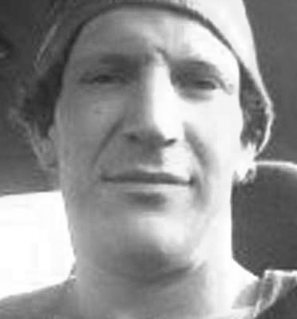
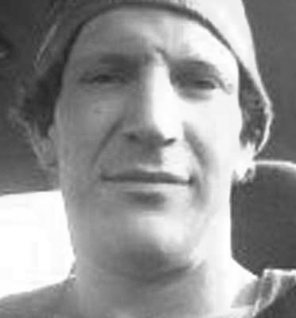

The Pike River Miners

Conrad Adams
43
43
Malcolm Campbell
25
25
Glen Cruse
35
35
Allan Dixon
59
59
Zen Drew
21
21
Chris Duggan
31
31
Joseph Dunbar
17
17
John Hale
45
45
Daniel Herk
36
36
David Hoggart
33
33
Richard Holling
41
41
Andrew Hurren
32
32
Jacobus Jonker
47
47
William Joynson
49
49
Riki Keane
28
28
Terry Kitchin
41
41
Samuel Mackie
26
26
Francis Marden
42
42
Michael Monk
23
23
Stuart Mudge
31
31
Kane Nieper
33
33
Peter O'Neill
55
55
Milton Osborne
54
54
Brendon Palmer
27
27
Ben Rockhouse
21
21
Peter Rodger
40
40
Blair Sims
28
28
Joshua Ufer
25
25
Keith Valli
62
62
Pike River Mine entrance

Pike River memorial service, 2010 (Te Ara)